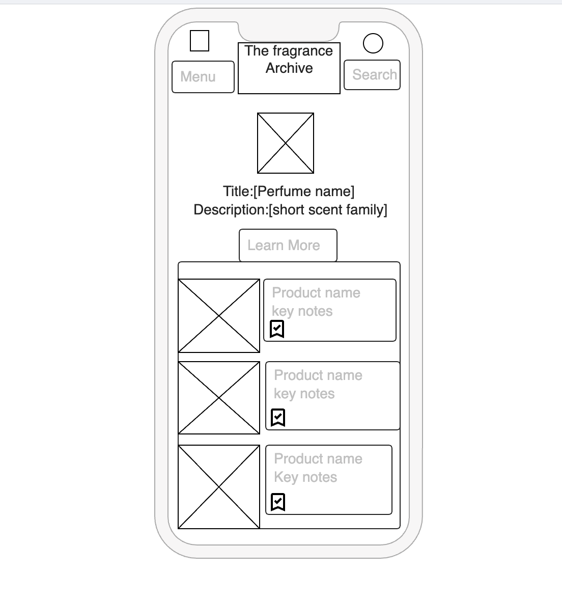
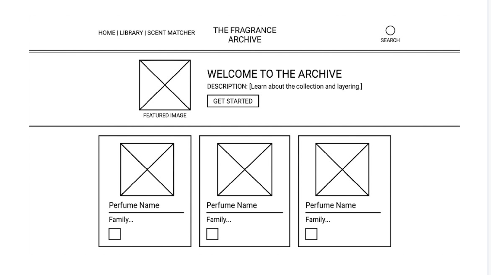

Site Name
The Fragrance Archive
I chose this name because it suggests a curated, organized, and high-end collection. It moves the focus from a simple list to an educational resource where scents are "archived" by their notes and characteristics.
Site Purpose
The purpose of this site is to catalog a personal fragrance collection while educating enthusiasts on scent families and layering. It provides a digital inventory for the owner and a discovery tool for visitors to learn about different perfume profiles.
Scenarios
- "I am looking for a perfume with sandalwood notes for an evening event; what does this collection recommend?"
- "How do I save my favorite scents from this archive so I can find them later?"
Color Schema
Baby Pink (#F4C2C2): Used for secondary buttons and decorative background sections.
Light Green (#90EE90): Used for 'Fresh' category highlights and success messages.
Gold (#D4AF37): Used for main headings, borders, and navigation hover states to convey luxury.
Typography
Playfair Display
This serif font will be used for all headings (h1, h2, h3) to provide a sophisticated and professional look consistent with the fragrance industry.
Montserrat
This sans-serif font will be used for body text, navigation items, and forms to ensure clean readability across all device sizes.
Wireframes
Mobile View
[Insert your mobile wireframe image here or describe: A single-column layout with a toggle menu, centered logo, and vertically stacked perfume cards.]

Desktop View
[Insert your desktop wireframe image here or describe: A three-column grid layout with a horizontal navigation bar and a multi-column footer.]
